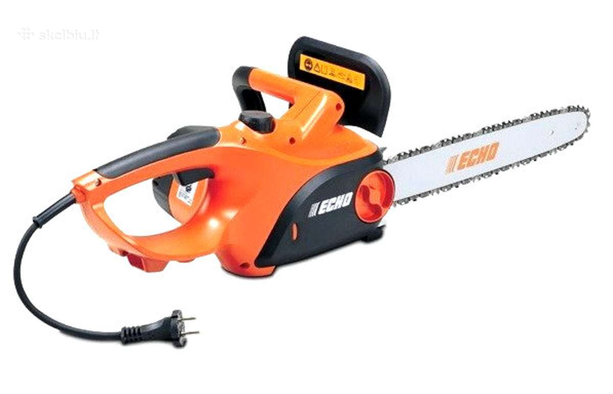

GRANDININIAI PJŪKLAI virš 100 modelių Žema kaina | Varle.lt
- Elektriniai pjūklai internetu Internetu pigiau Žema kaina ...
Įvairaus galingumo elektriniai, benzininiai Stiga pjūklai medienai. Patikima kokybė, nedidelė kaina. Nemokamas pristatymas visoje Lietuvoje. - ELEKTRINIAI PJŪKLAI Žema kaina | Varle.lt
Grandininiai elektriniai pjūklai internetu gera kaina: greitas pristatymas, platus asortimentas, kokybiškos prekės pigiau. Mūsų interneto svetainėje yra naudojami slapukai. Slapukai padeda užtikrinti tinkamą tinklapio veikimą bei jo tobulinimą, todėl būtinieji slapukai (techniniai, funkciniai bei analitiniai) yra įdiegiami ... - Benziniai, elektriniai pjūklai medžiui pjauti ...
Kaip žinia, elektriniai diskiniai pjūklai yra laikomi universaliu pjovimo įrankiu, kuriuo galima atlikti įvairių kampų pjūvius bei pjauti net ir pačias kiečiausias medžiagas. Kriterijai . Pateikiame svariausias diskinių pjūklų technines savybes į kurias vertėtų atkreipti dėmesį: - elektriniai pjuklai | pigu.lt
Elektriniai pjūklai Elektrinius pjūklus galite rinktis iš kelių rūšių: diskiniai pjūklai, tiesiniai pjūklai, siaurapjūkliai, bei įvairūs elektriniai pjūklams priedai ir kita. Elektrinių diskinių pjūklų maksimalus pjovimo gylis gali siekti 86 mm. Juos galite rinktis iš skirtingų gamintojų tokių kaip: Bosch, DeWalt, Makita ... - Elektriniai diskiniai pjūklai | Senukai.lt
Elektriniai pjūklai Filtruoti (0) Rodoma: 1 - 48 iš 89. Rūšiuoti pagal: „Draugų rato“ nariams. Norite geresnės kainos - tapkite „Draugų rato“ nariu Tapti nariu-10%. 152,10 € / vnt. 169,00 € / vnt. Turime sandėlyje ... - Grandininiai pjūklai | ZEMAKAINA.LT
Elektriniai pjūklai, Elektriniai rankiniai įrankiai RANKINĖS PJOVIMO STAKLĖS SU DVIGUBU PJŪKLU DBS125_230V HOLZMANN. 0 out of 5 (0) – skirtos pjauti: medienai, plastikui, metalui, nekeičiant įrankių ... - Elektriniai pjūklai - doho.lt
B kategorijos prekė. Gali turėti naudojimo žymių. Skaityti plačiau. Įnardinamas pjūklas Scheppach PL55. 1,2 kW galios, pjovimo gylis - 55 mm. Į komplektą įeina liniuotė - lygiagrečioji atrama - 1400 mm ilgio. - Internetinė parduotuvė Ermitazas.lt | Elektriniai pjūklai
Elektriniai pjūklai-- Elektriniai diskiniai pjūklai -- Akumuliatoriniai diskiniai pjūklai -- Siaurapjūkliai -- Tiesiniai pjūklai Daugiafunkciniai įrankiai ir jų priedai; Medienos apdirbimo staklės-- Skersinio pjovimo staklės - GRANDININIAI PJŪKLAI virš 100 modelių Žema kaina | Varle.lt
Elektriniai pjūklai. Akumuliatorinis grandininis pjūklas AL-KO CS 36 Li (Be akumuliatoriaus) Prekės kodas: 113365 Gamintojas: AL-KO. 199,00 € 10,08 € /mėn. « Atgal. Sveiki, spauskite čia ir prisijunkite s-technika.lt. Pirkinių krepšelis. Krepšelis tuščias. Prekė pridėta į krepšelį, - Elektriniai pjūklai – www.e-asela.lt
Kokybiški, ilgaamžiai, visame pasaulyje žinomų gamintojų elektriniai diskiniai pjūklai. Apsilankykite ir sužinokite daugiau apie geriausius mūsų pasiūlymus
Pristatymas Apmokėjimas Informacija Grąžinimas ir garantijos Apie varle.lt DUK Rekvizitai Karjera Susisiekite +370 670 95555 arba palikite pranešimą Verslui Kontaktai
Kai reikia kainos ir patarimo!
Prisijungti
0Patikusios prekės
0Krepšelis
VISOS PREKĖS Mobilieji telefonai, foto ir video Mobilieji telefonai Apple Xiaomi Samsung Huawei OnePlus CAT SONY Daugiau... Dėklai ir laikikliai Asmenukių lazdos, Selfie sticks Planšetinių kompiuterių dėklai Planšečių ir telefonų laikikliai Telefonų dėklai Telefonų korpusai APPLE SHOP MI SHOP SAMSUNG SHOP Fototechnika Skaitmeniniai fotoaparatai Veidrodiniai fotoaparatai Sisteminiai fotoaparatai Momentiniai fotoaparatai Lomo fotoaparatai Foto albumai Foto popierius Atminties kortelės Fototechnikos priedai Nuotraukų rėmeliai Daugiau... Teleskopai, mikroskopai, žiūronai Teleskopai Mikroskopai Žiūronai Monokliai Didinamieji stiklai Teleskopų ir mikroskopų priedai Daugiau... Vaizdo kameros ir priedai 360 kameros Veiksmo kameros ir GoPro kameros Studijos monitoriai Vaizdo juostos Vaizdo kamerų priedai Daugiau... GPS Navigacija Automobilių navigaciniai imtuvai Jūriniai navigaciniai imtuvai, echolotai Nešiojami navigaciniai imtuvai Aviaciniai navigaciniai imtuvai GPS priedai Kita įranga Laisvų rankų įranga Radijo ryšio įranga Dronai Stacionarūs telefonai Priedai ir aksesuarai Apsauginės plėvelės ir stiklai telefonams, planšetėms Atminties kortelės Automobiliniai telefonų krovikliai Baterijos (Standartinės) Universalūs baterijų įkrovikliai Baterijos ir įkrovikliai (Telefonams, planšetėms) Nešiojami įkrovikliai (Power bank) Skaitmeniniai pieštukai ekranams Telefonų linzės Daugiau... Išmanieji laikrodžiai, apyrankės ir priedai Išmanieji laikrodžiai, apyrankės Priedai išmaniems laikrodžiams Kompiuterinė technika Nešiojami kompiuteriai ir priedai Nešiojami kompiuteriai Išoriniai kietieji diskai (HDD) Docking stations Nešiojamų kompiuterių atmintys (RAM) Nešiojamų kompiuterių įkrovikliai Nešiojamų kompiuterių baterijos Nešiojami aušintuvai stovai ir laikikliai Kompiuterių apsauginiai užraktai, troseliai Planšetiniai kompiuteriai ir priedai Planšetiniai kompiuteriai Planšetinių kompiuterių dėklai E-Skaityklės (eBook) Grafinės planšetės Stacionarūs kompiuteriai Žaidimų kompiuteriai Powered by Asus Mini kompiuteriai (Sticks, NUC) Atnaujinti stacionarūs kompiuteriai Monitoriai Projektoriai eSporto ir žaidimų (gaming) įranga Išoriniai įrenginiai Pelės Klaviatūros Ausinės Garso kolonėlės Pelių kilimėliai Konsolės, žaidimai ir priedai Žaidimų konsolės Kompiuteriniai žaidimai Nintendo Switch Žaidimų kėdės Virtuali realybė (VR) Spausdintuvai ir skeneriai Spausdintuvai Skeneriai 3D spausdintuvai Dokumentų naikintuvai Tinklo įranga Tinklo plokštės, adapteriai, kontroleriai Maršrutizatoriai (Router) Šakotuvai (Switch) Vaizdo įrašymo įranga Tinklo kameros ir monitoringas Išmanieji namai Serveriai ir duomenų saugyklos Grafinės planšetės Stacionarių kompiuterių komponentai Pagrindinės plokštės Procesoriai Kompiuterių atmintys (RAM) Kietieji diskai / SSD Išoriniai kietieji diskai Vaizdo plokštės Korpusai kompiuteriams Maitinimo blokai Programinė įranga Antivirusai Operacinės sistemos Kabeliai, laidai ir adapteriai USB kabeliai Adapteriai Tinklo kabeliai (UTP, DSL, Fiber) Audio/Video kabeliai Elektros maitinimo kabeliai (ilgintuvai) Buitinė technika ir elektronika Televizoriai Garso ir vaizdo technika Namų kino sistemos TV imtuvai (priedėliai dvb-t dvb-c dvb-s) Projektoriai Muzikos instrumentai ir priedai Kolonėlės, akustinės sistemos Muzikiniai centrai Magnetolos, Radijo grotuvai Automagnetolos Daugiau... Skalbimo mašinos Skalbinių džiovyklės Stambi virtuvės technika Orkaitės Kaitlentės Viryklės Mikrobangų krosnelės Indaplovės Šaldytuvai Dviduriai šaldytuvai Vyno šaldytuvai Automobiliniai šaldytuvai Šaldikliai, šaldymo dėžės Gartraukiai Daugiau... Smulki virtuvės technika Daugiafunkciniai puodai Kavos aparatai Garų puodai Kokteilių plaktuvai Plakikliai (mikseriai) Trintuvai (blenderiai) Pieno plakikliai Gruzdintuvės Skrudintuvai Virtuviniai kombainai Vakuumatoriai ir priedai Mini viryklės Sulčiaspaudės Virduliai Vaflinės Elektriniai griliai ir kepsninės Lauko griliai ir kepsninės Sumuštinių keptuvai Kavamalės Mėsmalės Virtuvinės svarstyklės Daugiau... Namų technika Pūkų surinktuvai Apmėtymo mašinos (overlokai) Siuvimo mašinos Garais valantys prietaisai Dulkių siurbliai Langų valytuvai Lyginimo įranga Vonios svarstyklės Dulkių siurblių filtrai ir maišeliai Daugiau... Oro reguliavimas Šilumos siurbliai Jura Grožis ir sveikata Plaukų džiovintuvai Plaukų formavimo šukos Plaukų tiesintuvai Žnyplės plaukams Barzdaskutės Plaukų kirpimo mašinėlės Kirpimo mašinėlės nosies plaukams Veido ir kūno šveitikliai Epiliatoriai Fotoepiliatoriai Plaukų formavimo įrankiai, priedai Kosmetiniai veidrodžiai Manikiūro prietaisai Masažuokliai Pėdų masažuokliai Šildyklės Dantų šepetėliai ir irigatoriai Daugiau... Signalizacijos, apsaugos sistemos ir davikliai Kvepalai, kosmetika Kvepalai Kvepalai moterims Kvepalai vyrams Kvepalai vaikams Kvepalų rinkiniai Feromoniniai kvepalai Kvapai namams Loreal Burnos higienai Saulės kosmetika Kosmetinės Plaukų priežiūrai ir modeliavimui Plaukų priežiūra Plaukų modeliavimas Plaukų dažymas, šviesinimas Dekoratyvinė kosmetika Priemonės veidui Priemonės lūpoms Priemonės akims Priemonės nagams Daugiau... Kūno priežiūrai Losjonas kūnui Gelis kūnui (želė) Dezodorantas kūnui Aliejus kūnui (masažui) Kremas kūnui Muilas kūnui Skutimosi priemonės Daugiau... Asmeninei higienai Prausimosi reikmenys Veido priežiūrai Veido kremai Kaukės veido odai Paakių kremai Pieneliai veidui Prausikliai veidui Serumai veidui Makiažo valikliai Daugiau... Tualetinis popierius ir servetėlės Depiliacijos priemonės Sodo prekės, įrankiai Šiltnamiai Vejapjovės (Žoliapjovės) Vejos robotai Krūmapjovės (Trimeriai) Kultivatoriai Vejos aeratoriai, skarifikatoriai Gyvatvorių žirklės Grandininiai pjūklai Vejos traktoriai Trašų, sėklų barstytuvai Karučiai ir vežimėliai Trąšos ir augalų priežiūra Pneumatinė įranga Pneumatiniai suktuvai ir gręžtuvai Pneumatiniai šlifuokliai Pneumatiniai kniedikliai ir viniakalės Pneumatiniai nupūtikliai Pneumatiniai pulverizatoriai Greitos jungtys Metalo detektoriai Lauko baldai Elektriniai įrankiai Elektriniai gręžtuvai, suktuvai Smūginiai veržliasukiai Elektriniai pjūklai Elektrinės frezos Obliavimo staklės, obliai Elektriniai staliniai galąstuvai Orapūtės, karšto oro fenai Daugiau... Akumuliatoriniai įrankiai Akumuliatoriniai gręžtuvai, perforatoriai Akumuliatoriniai gręžtuvai, suktuvai Akumuliatoriniai veržliasukiai Akumuliatoriniai pjūklai Akumuliatoriniai obliai Daugiau... Vazonai ir daigyklos Stovai augalams Valymo, plovimo įranga Aukšto slėgio plovyklos Aukšto slėgio plovyklų priedai Grindų priežiūros įranga Daugiau... Medžio apdirbimo įranga Santechniniai įrankiai Plytelių pjaustyklės Kopėčios, pastoliai Darbastaliai Sniego valytuvai Tvoros ir vartai sodui Darbo rūbai Avalynė darbui Darbinės ausinės Darbiniai akiniai Darbinės pirštinės Darbo saugos ženklai ir priedai Daugiau... Sodo technikos priedai Priekabos ir puspriekabės Grandinės ir lynai Grandininiams pjūklams Priedai trimeriams, žoliapjovėms Priedai sodo traktoriams Kultivatoriams Daugiau... Įrankių priedai Abrazyvai Sukimo raktų galvutės Grąžtai Gręžimo karūnos Įrankių dėžės, vežimėliai Daugiau... Statybinės medžiagos ir priedai Kenkėjų kontrolė Baldai ir namų interjeras Miegamojo baldai Miegamojo lovos Miegamojo komodos Pakabinamos miegamojo lentynėlės Miegamojo spintos Miegamojo staliukai Miegamojo spintelės Daugiau... Pakabinamos lentynos Gėrimų spintelės ir laikikliai Interjero detalės ir aksesuarai Užuolaidos Žaliuzės ir roletai Markizės Žvakės ir žvakidės Kvapai namams Parketlentės Daugiau... Lauko baldai Lauko baldų komplektai Hamakai Lauko skėčiai Gultai Lauko kėdės ir foteliai Lauko stalai Lauko lovos Lauko suolai ir suoliukai Lauko supynės Vaikiški lauko baldai Smėlio dėžės Pavėsinės ir tentai Lauko pertvaros Įvairūs lauko baldai Daugiau... Patalynė Minkšti baldai Sėdmaišiai Foteliai Pufai Sofos Daugiau... Svetainės baldai TV staliukai Svetainės komodos Svetainės spintos Svetainės vitrinos Svetainės lentynos Svetainės sekcijos Daugiau... Čiužiniai ir grotelės Čiužiniai Lovų grotelės Širmos ir pertvaros kambariui Prieškambario baldai Prieškambario komodos Pakabinamos prieškambario lentynėlės Prieškambario lentynos Prieškambario spintelės Prieškambario spintos Daugiau... Virtuvės baldai Virtuvės stalai Virtuvės spintelės Virtuviniai kampai Vitrinos Barai Stalviršiai Daugiau... Vonios baldai Vonios komplektai Praustuvų spintelės Vonios spintelės Kėdės, krėslai, minkštasuoliai Vaikų baldai Vaikų kambario lovos Vaikų kambario sekcijos Vaikų kambario lentynos Vaikų kambario spintos Vaikų kambario lentynėlės Vaikų kambario staliukai Vaikų kambario komodos Vaikų kambario stalai Vaikų kambario spintelės Vaikų kambario vitrinos Daugiau... Biuro baldai Žurnaliniai staliukai Darbo stalai Biuro lentynos Biuro spintelės Biuro spintos Biuro komodos Daugiau... Užvalkalai baldams Sportas, laisvalaikis, turizmas Aktyvus sportas ir poilsis gryname ore Dviračiai Dviratukai vaikams Batutai Riedučiai Riedžiai Paspirtukai Elektriniai paspirtukai Vaikščiojimo lazdos Riedlentės Kamuoliai Pompos Dviračių priedai ir aksesuarai Paspirtukų priedai ir aksesuarai Žaidimų aikštelės, supynės Metalo detektoriai Golfo inventorius Daugiau... Lauko tenisas Treniruokliai ir priedai sportui Sporto inventorius Hanteliai ir svoriai Elipsiniai treniruokliai Dviračiai treniruokliai Bėgimo takeliai Daugiafunkciniai treniruokliai Sporto priedai treniruotėms Daugiau... Gimnastika, aerobika, joga Smiginiai Apranga ir apsaugos sportui Papildai sportui Vandens sportas ir pramogos Baseinai Plaukimo kepuraitės Nardymo kaukės ir vamzdeliai Plaukimo akiniai Plaukmenys (ląstai) Plaukimo rankovės Plaukimo aksesuarai Gelbėjimosi liemenės ir ratai Plaukimo kostiumai Vandens batai Pripučiami čiužiniai Plaukimo lentos ir plūdurai Irklentės Vandens slidės Kajakai Vandens aerobikos prekės Daugiau... Turizmas Hamakai Miegmaišiai Palapinės Turistinės kuprinės Lauko skėčiai ir tentai Lauko griliai ir kepsninės Stovyklavimo žibintai, šviestuvai Turistiniai indai Turistiniai valgymo įrankiai Apsaugos nuo vabzdžių Daugiau... Žūklės reikmenys Valtys Kėdės ir krėslai žvejybai Meškerės žvejybai Graibštai ir kabliai žvejybai Magnetai paieškai Daugiau... Vaikui ir mamai, žaislai Žaislai LEGO® Konstruktoriai Robotai, išmanūs žaislai Radijo bangomis valdomi žaislai Edukaciniai žaislai Muzikiniai žaislai Kūrybiniai žaislai Modeliukai Trasos ir racing mašinėlės Dėlionės Stalo žaidimai Smėlio žaislai Vandens žaislai Pripučiami vandens žaislai Paplūdimio mėtymo diskai Figūrėlės Mediniai žaislai Barškučiai ir kramtukai Vilkeliai Daugiau... Vežimėliai vaikams Automobilinės kėdutės Vaikiški dviračiai Vaikštynės-stumdukai Vaikų ir kūdikių maitinimui Gertuvės ir puodeliai vaikams Indeliai ir lėkštutės vaikams Žindukai ir kramtukai Kūdikių buteliukai ir buteliukų šildytuvai Maitinimo pagalvės Seilinukai Maitinimo kėdutės Kūdikių nešioklės Vaikų ir kūdikių priežiūrai Mobilios auklės Sauskelnės kūdikiams Kūdikio higienai Vystymo lentos ir vystyklai Naktipuodžiai Kūdikių vonelės Kūdikių ir vaikų saugumui Prekės mamoms Pientraukiai Įklotai ir paklotai Patalynė kūdikiui Drabužėliai vaikams ir kūdikiams Laipteliai vaikams Gultukai vaikui Šildyklės Įvairūs aksesuarai vaikui Įvairios prekės vaikams ir tėvams Apranga, avalynė, aksesuarai Laikrodžiai Vyriški Moteriški Daugiau... Avalynė, kedai, šlepetės Avalynė vyrams Avalynė moterims Avalynė vaikams Šlepetės Baseino ir paplūdimio šlepetės Avalynė darbui Daugiau... Rankinės Moteriškos rankinės Vyriškos rankinės Daugiau... Papuošalai Darbo rūbai Apranga moterims Striukės moterims Liemenės moterims Švarkeliai moterims Marškinėliai moterims Sijonai moterims Suknelės moterims Apatinis trikotažas moterims Maudymosi kostiumėliai Daugiau... Piniginės Moteriškos piniginės Vyriškos piniginės Dėklai Dokumentams Raktinės Vizitinėms kortelėms Apranga vyrams Striukės vyrams Švarkai vyrams Marškiniai vyrams Marškinėliai vyrams Kelnės vyrams Šortai vyrams Apatinis trikotažas vyrams Paplūdimio apranga vyrams Daugiau... Pirštinės Vyriškos pirštinės Moteriškos pirštinės Daugiau... Skėčiai Diržai Apranga vaikams Striukės vaikams Džemperiai vaikams Marškinėliai vaikams Kelnės vaikams Šortai vaikams Apatinis trikotažas vaikams Paplūdimio apranga vaikams Daugiau... Kepurės Šalikai, skraistės Sportiniai krepšiai Kuprinės Lagaminai ir kelioniniai krepšiai Bagažo svarstyklės Santechnika, šildymas Vonios ir jų priedai Vonios ir apdaila Dušo kabinos ir apdaila Dušo stovai, masažinės sienelės Maišytuvai Praustuvai Plautuvės Klozetai, pisuarai Sifonai Dušo latakai ir trapai Nerūdijančio plieno žarnelės WC rėmai Santechnikos aksesuarai Vonios ir tualeto aksesuarai Tualetinio popieriaus laikikliai Rankšluosčių džiovintuvai, gyvatukai, kopėtėlės Vonios užuolaidos ir kilimėliai Klozetų dangčiai Šildymo prietaisai Radiatoriai Vandens šildytuvai Išplėtimo indai Šildymo katilai Grindų šildymas Krosnelės ir židiniai Priedai krosnelėms ir židiniams Kaminai, dūmtraukiai ir įdėklai Santechninė šildymo armatūra Atsarginės dalys santechnikai Ketiniai, fitingai Sklendės ir vožtuvai Vandens filtravimo sistemos Tvirtinimo detalės ir laikikliai Vandens skaitikliai Kitos dalys santechnikai Kondicionavimo ir vėdinimo įrangai Ventiliacija Automobilių prekės Automobiliniai kilimėliai Audi kilimėliai BMW kilimėliai Mercedes Benz kilimėliai Toyota kilimėliai Volkswagen kilimėliai Volvo kilimėliai Daugiau... Automobiliniai sėdynių užvalkalai Audi sėdynių užvalkalai BMW sėdynių užvalkalai Mercedes Benz sėdynių užvalkalai Toyota sėdynių užvalkalai Volkswagen sėdynių užvalkalai Volvo sėdynių užvalkalai Daugiau... Elektromobilių įkrovimo įranga Nano danga Padangos ir priedai Padangos automobiliams Padangos motociklams Sniego grandinės Alkotesteriai Automagnetolos FM moduliatoriai GPS imtuvai Vaizdo registratoriai Parkavimo sistemos Valytuvai automobiliams Automobilių apsaugos priemonės Saugos ženklai ir iškabos Akumuliatoriai ir priedai Automobiliniai akumuliatoriai Moto akumuliatoriai Akumuliatorių įkrovikliai Akumuliatorių priežiūros prekės Užvedimo laidai Diagnostikos įranga automobiliams Inverteriai Alyva, tepalai Motociklo priežiūrai Priedai automobiliams Auto kabliai Specialūs įrankiai Įvairios staklės Auto darbastaliai Auto įvairūs Autochemija Autokosmetika Auto lemputės Keltuvai ir pakėlėjai Prekės gyvūnams Šunims Sausas maistas šunims Šlapias maistas, konservai šunims Skanėstai šunims Žaislai šunims Dubenėliai ir girdyklos šunims Higienos priemonės šunims Vitaminai ir papildai šunims Priežiūros priemonės šunims Pavadėliai šunims Petnešos šunims Antkakliai šunims Antsnukiai šunims Drabužiai šunims Guoliai ir patiesalai šunims Narvai Būdos ir Voljerai šunims Baseinai šunims Daugiau... Katėms Sausas maistas katėms Šlapias maistas, konservai katėms Skanėstai katėms Žaislai katėms Dubenėliai ir girdyklos katėms Higienos priemonės katėms Vitaminai ir papildai katėms Priežiūros priemonės katėms Pavadėliai, antkakliai, petnešos katėms Kraikas katėms Tualetai ir semtuvėliai katėms Draskyklės ir stovai katėms Guoliai ir patiesalai katėms Transportavimo narvai ir krepšiai katėms Daugiau... Žuvims Maistas žuvims Filtravimo įranga akvariumams Filtravimo medžiagos akvariumams Apšvietimas akvariumams Šildytuvai ir kondicionieriai akvariumams Siurbliai ir pompos akvariumams Oro kompresoriai ir priedai akvariumams CO2 sistemos akvariumams Dekoracijos, augalai ir gruntas akvariumams Tvenkiniams Akvariumų spintelės Daugiau... Graužikams Maistas graužikams Nameliai ir narvai graužikams Įranga ir priedai graužikams Paukščiams Lesalas paukščiams Inkilai paukščiams Įranga ir priedai paukščiams Papuošalai gyvūnams Aromaterapija Landos į duris gyvūnams Bevielės nematomos tvoros gyvūnams Pirmoji pagalba augintiniams Įvairios prekės gyvūnams Knygos, biuro prekės Brūkšninių kodų skaitytuvai Pinigų tikrinimo aparatai Pinigų skaičiuokliai ir rūšiuokliai Etikečių ir lipdukų spausdintuvai Laminatoriai Įrišimo aparatai Skylamušiai ir įspaudai Įvairios biuro prekės Popieriaus pjaustykles Dokumentų naikintuvai Popierius Kalkuliatoriai Antspaudai Segikliai ir išsegikliai Segtuvai ir įmautės Dėklai ir aplankai Archyvavimo dėžės Užrašų knygutės ir sąsiuviniai Penalai ir pieštukinės Rašikliai Flomasteriai Klijai popieriui Lipdukai Lipnios etiketės ir juostelės Magnetukai Archyvavimo priedai Kalendoriai Mobilūs reklaminiai stendai Prezentacinės lentos Seifai Knygos Psichologija Švietimas ir ugdymas Enciklopedijos ir žodynai Mokomoji literatūra Biografijos Turizmas Pratybos Menas Vaikų ir jaunimo literatūra Memuarai Maisto prekės Pieno produktai Duonos gaminiai Kruopos dribsniai ir košės Saldumynai Padažai ir majonezai Traškučiai ir užkandžiai Miltai Šaldytas maistas Margarinas ir riebalai Gėrimai Įvairios Aibė prekės Maisto papildai ir mineralai Daržovės ir grybai Mėsa ir mėsos produktai Konservuotas maistas Riešutai ir džiovinti vaisiai Prieskoniai ir kepimo priedai Aliejus ir actas Kava, kakava ir arbata Vaisiai ir uogos Žuvis ir jūros gėrybės Kiaušiniai Sausainiai ir konditerija Dovanos, šventinė atributika Dovanos pagal gavėją Dovanos mamai Dovanos tėčiui Dovanos vaikams Dovanos moterims Dovanos vyrams Dovanos JAI Dovanos JAM Originalios dovanos Dovanų kuponai Medaliai ir monetos Nutrinami žemėlapiai Kūrybinės dovanos Šventinė atributika Fejerverkai (saliutai) Kalėdinės eglutės Kalėdiniai lauko lazeriai Kalėdinės girliandos 3D vaizdo hologramos Dovanų dėžutės, maišeliai Sveikinimų atvirutės Šventiniai kostiumai Kiti šventiniai papuošimai Sirgalių atributika Vėliavos ir priedai Proginės dovanos Valentino dienos dovanos Dovanos po eglute Gimtadienio dovanos Dovanos mergvakariui Dovanos bernvakariui Įkurtuvių dovanos Krikštynų dovanos Dovanų dėžutės, maišeliai Dovanos pagal tipą Marškinėliai Džemperiai Smėlinukai Fotodovanos Pagalvių užvalkalai Puodeliai su užrašais Originalūs puodeliai Bokalai ir stikliukai Originalios gertuvės Vakarėliams ir šventėms Vyno reikmenys Taupyklės Emocijos Raktų pakabukai Simpsonų suvenyrai Linksmosios prijuostės Zippo žiebtuvėliai Medinės dovanos Knygų skirtukai Vaistinė Deguonies kameros Masažo stalai ir krėslai Moterų sveikatos priemonės Vyrų sveikatos priemonės Maisto papildai ir mineralai Pirmoji pagalba Aromatiniai - eterinai aliejai Stetofonendoskopai Medicininiai simuliatoriai Anatominiai modeliai Tikslieji mokslai Reabilitacinės priemonės Mamoms ir vaikams Ortopedija Daugiau... Sekso ir erotinės prekės SEKSO PREKĖS MOTERIMS Vaginaliniai kamuoliukai Moteriškos pompos Masturbatoriai vaginoms Pripučiamos lėlės Sekso prekės Vyrams Masturbuokliai Penio žiedai Pripučiamos sekso lėlės Penio pompos Lubrikantai, aliejai ir kt. Lubrikantai Oraliniai lubrikantai Masažo aliejai Analiniai lubrikantai Vibratoriai Tradiciniai vibratoriai Mini vibratoriai Vibratoriai kiškučiai G - taško vibratoriai Analinio sekso prekės Analiniai kaiščiai ir falai Analiniai vibratoriai Analiniai kamuoliukai Rinkiniai Erotinis apatinis trikotažas Seksualios kojinės Seksualios kelnaitės Seksualūs kostiumai Seksualūs korsetai Erotiniai suvenyrai ir žaidimai Erotiniai suvenyrai Erotiniai žaidimai Įvairios sekso prekės Daugiau... Kūryba ir rankdarbiai Rinkiniai siuvinėjimui Siuvimo ir audimo priedai Deimantinės mozaikos, dėlionės Tapyba pagal skaičius ir spalvas Siuvimo audiniai Biserio karoliukai vėrimui Siūlai mezgimui, nėrimui, siuvinėjimui Aksesuarai rankdarbiams Vakuuminės kameros Slėgio bakai Molbertai Drobės Teptukai tapybai Modeliniai dažai Buities, virtuvės, apyvokos prekės Patalynė Patalynės komplektai Pagalvės Antklodės Paklodės Daugiau... Rankšluosčiai Rankšluosčiai vaikams Virtuvės reikmenys Lauko katilai Puodai Keptuvės Dangčiai puodams ir keptuvėms Indai, lėkštės, servizai Taurės, puodeliai Arbatinukai, kavinukai Virtuvės ir stalo įrankiai Priedai kepsninėms ir griliams Trintuvės ir tarkos Staltiesės, virtuviniai rankšluosčiai Termo puodeliai Termosai Kepimo popierius, formos, indai Prieskoninės Virtuviniai padėklai Vienkartiniai, teminiai indai Vandens staliniai filtrai Maisto saugojimo, konservavimo indai Prieskoniai ir padažai Namų apyvokos prekės Šiukšliadėžės Šluotos ir šepečiai valymui Šluostės ir kempinėlės valymui Valikliai ir plovikliai Vežimėliai ir kibirai valymui Lempos ir apšvietimas Lempos, lemputės Stalo šviestuvai Pakabinami šviestuvai Lubiniai šviestuvai Sieniniai šviestuvai Vaikiški šviestuvai, projektoriai Kalėdinės girliandos Įmontuojami šviestuvai, LED panelės LED šviesos juostos, profiliai Prožektoriai ant galvos Pramoninis apšvietimas Pastatomi šviestuvai Lauko šviestuvai Kalėdiniai lauko lazeriai Prožektoriai, žibintai Daugiau... Pirtys ir priedai Kubilai pirtims Kvapai pirtims Akmenys pirtims Pirties baldai Lauko pirtys Pirtys kabinos Krosnelės pirtims Valdymas ir apsaugos pirtims Garo generatoriai ir dalys ▿ Rodyti daugiau kategorijų Išpardavimas Akcijos Atnaujintos prekės Patarimai Prekybos centras Rikiavimas Pigiausi viršuje Brangiausi viršuje Daugiausiai vertinti Didžiausia nuolaida Sodo prekės, įrankiaiGrandininiai pjūklai
(103) Grandininiai pjūklai, išsiskiriantys inovatyvia ir ergonomiška konstrukcija, užtikrinančia saugų darbą. Platus grandininių pjūklų, skirtų tiek reiklesniems, tiek paprastiems darbams sode, sodyboje ar miške, asortimentas. Rinkis iš patikimiausių ir žinomiausių grandininių pjūklų gamintojų: Bosch, Hitachi, Makita, Ikra, MTD, Einhell ir kt. Mūsų asortimente rasi tikrai didelį akumuliatorinių, elektrinių ir benzininių grandininių pjūklų pasirinkimą už protingą kainą. Rodyti daugiau Grandininis pjūklas McCulloch CS 42S + papildoma grandinė 19 € / mėn 189, 99 € 1-2 d. d. (8) Gamintojas: McCulloch Tipas: Benzininis Galia (kW): 1.5 Pjovimo juostos ilgis (cm): 35.0 Benzininis grandininis pjūklas 2.5 kW, Hander HD52A ||TOP PASIRINKIMAS|| 119 € 2-3 d. d. (34) Gamintojas: Hander Tipas: Benzininis Galia (kW): 2,5 kW Pjovimo juostos ilgis (cm): 40 Makita DUC303Z Akumuliatorinis grandininis pjūklas, 2X18V BL-motor, 300mm, 20 m/s. 31, 35 € / mėn 398, 99 €- 21 % 313, 45 € 3-7 d. d. (10) Gamintojas: Makita Tipas: Akumuliatorinis Pjovimo juostos ilgis (cm): 30.0 Makita Elektrinis pjūklas UC3541A 35cm (14") 116, 80 €
- 7 % 108, 99 € 2-4 d. d. (36) Gamintojas: Makita Tipas: Elektrinis Galia (kW): 1.8 Pjovimo juostos ilgis (cm): 35 Spalva: Žydra, Juoda Elektrinis pjūklas Makita UC4051A 40cm (16") 17 € / mėn 183, 68 €
- 7 % 169, 99 € 4-7 d. d. (24) Gamintojas: Makita Tipas: Elektrinis Galia (kW): 2.0 Pjovimo juostos ilgis (cm): 40 Spalva: Mėlyna, Žalia, Juoda Makita DUC302Z Akumuliatorinis grandininis pjūklas, 2X18V , 300mm, Be akumuliatorių 22 € / mėn 219, 99 € 4-7 d. d. (19) Gamintojas: Makita Tipas: Akumuliatorinis Galia (kW): 0.8 Pjovimo juostos ilgis (cm): 30.0 Spalva: Sidabrinė, Mėlyna, Juoda Makita DUC353Z Akumuliatorinis grandininis pjūklas, 2X18V BL-motor, 350mm, 20 m/s. 26, 69 € / mėn 266, 90 € 4-7 d. d. (15) Gamintojas: Makita Tipas: Akumuliatorinis Pjovimo juostos ilgis (cm): 35 Spalva: Mėlyna, Juoda Grandininis pjūklas Elektrinė aukštapjovė 750 Watt Ikra Mogatec IEAS 750 F 129 € 2-4 d. d. (14) Gamintojas: Ikra Tipas: Elektrinis Galia (kW): 0.8 Pjovimo juostos ilgis (cm): 20 Elektrinis grandininis pjūklas 2,2 kW Ikra Mogatec IECS 2240 TF 115 € 2-4 d. d. (8) Gamintojas: Ikra Tipas: Elektrinis Galia (kW): 2.2 Pjovimo juostos ilgis (cm): 40 Grandininis pjūklas Benzininė aukštapjovė Grizzly BKS 25 L 0.8kW 199 €
- 21 % 157 € 2-4 d. d. (7) Gamintojas: Grizzly Tipas: Benzininis Galia (kW): 0.8 Pjovimo juostos ilgis (cm): 20.0 Spalva: Žydra Elektrinis grandininis pjūklas 1,8 kW Ikra Mogatec IECS 1835 99 € 2-4 d. d. (7) Gamintojas: Ikra Tipas: Elektrinis Galia (kW): 1.8 Pjovimo juostos ilgis (cm): 35 Akumuliatorinis grandininis pjūklas Einhell GE-LC 18 Li b akumuliatoriaus ir kroviklio 84, 99 € 3-5 d. d. (12) Gamintojas: Einhell Tipas: Akumuliatorinis Pjovimo juostos ilgis (cm): 25.0 Benzininis grandininis pjūklas MOTOSIERRA DEFENDER ZR60, 3,4 kW, 50cm Oregon juosta 129 € 2-3 d. d. (53) Gamintojas: Defender Tipas: Benzininis Galia (kW): 3.4 Grandininis pjūklas Makita UC3551A Elektrinis grandinis pjūklas, 2000W, 14", 3/8", 17, 03 € / mėn 223, 16 €
- 24 % 170, 27 € 4-5 d. d. (6) Gamintojas: Makita Tipas: Elektrinis Galia (kW): 2.0 Pjovimo juostos ilgis (cm): 35 Spalva: Mėlyna, Žydra, Juoda Elektrinis grandininis pjūklas Bosch AKE 30 S 9 m/s, 1800 W, 1.1 mm, 30 cm 99, 99 €
- 12 % 87, 99 € 2-4 d. d. (23) Gamintojas: Bosch Tipas: Elektrinis Galia (kW): 1.8 Pjovimo juostos ilgis (cm): 30 Spalva: Žalia, Juoda Akumuliatorinis grandininis pjūklas Einhell GE-LC 18 Li Kit (1x3,0 Ah) 149, 99 € 3-5 d. d. (16) Gamintojas: Einhell Tipas: Akumuliatorinis Pjovimo juostos ilgis (cm): 25 Spalva: Raudona, Juoda Akumuliatorinė aukštapjovė Bosch UniversalChainPole 18 17, 60 € / mėn 199, 99 €
- 12 % 175, 99 € 2-4 d. d. (6) Gamintojas: Bosch Tipas: Akumuliatorinis Pjovimo juostos ilgis (cm): 20 Spalva: Raudona, Žalia, Juoda Ikra Elektrinis grandininis pjūklas Tonino Lamborghini 2,4 kW KS 6024 189 €
- 21 % 149 € 2-4 d. d. (4) Gamintojas: Ikra Tipas: Elektrinis Galia (kW): 2.4 Pjovimo juostos ilgis (cm): 40 Grandininis pjūklas 2000W/40 MAKITA UC4050A 159, 99 €
- 7 % 148, 60 € 5-8 d. d. (4) Gamintojas: Makita Tipas: Elektrinis Galia (kW): 2.0 Pjovimo juostos ilgis (cm): 40 Spalva: Žydra, Juoda Akumuliatorinis grandininis pjūklas MAKITA DUC254Z 22, 89 € / mėn 228, 89 € 5-8 d. d. (4) Gamintojas: Makita Tipas: Akumuliatorinis Pjovimo juostos ilgis (cm): 25.0 Spalva: Mėlyna, Juoda Elektrinis grandininis pjūklas Einhell GE-EC 2240 89, 99 € 3-5 d. d. (8) Gamintojas: Einhell Tipas: Elektrinis Galia (kW): 2.2 Spalva: Raudona, Juoda Elektrinis grandininis pjūklas Bosch AKE 40 S 139, 98 €
- 13 % 121, 99 € 2-4 d. d. (3) Gamintojas: Bosch Tipas: Elektrinis Galia (kW): 1.8 Pjovimo juostos ilgis (cm): 40 Spalva: Žalia, Juoda Makita elektrinis grandinis pjūklas UC4041A,1800W, 16" 143, 99 €
- 18 % 118, 79 € 3-7 d. d. (3) Gamintojas: Makita Tipas: Elektrinis Galia (kW): 1.8 Pjovimo juostos ilgis (cm): 40 Spalva: Mėlyna, Žydra, Juoda Black & Decker Juodas & Decker Akumuliatorinis grandininis pjūklas GKC1825L20 18V 19, 57 € / mėn 195, 74 € 5-8 d. d. (3) Gamintojas: Black & Decker Tipas: Akumuliatorinis Pjovimo juostos ilgis (cm): 25 Spalva: Oranžinė, Juoda Grandininis pjūklas Akumuliatorinė aukštapjovė 40V Ikra Mogatec IAAS 40-25 - KOMPLEKTAS 25, 90 € / mėn 299 €
- 13 % 259 € 2-4 d. d. (3) Gamintojas: Ikra Tipas: Akumuliatorinis Pjovimo juostos ilgis (cm): 25 Elektrinis grandininis pjūklas 2400W Grizzly EKS 2440 QT 118, 90 € 2-4 d. d. (3) Gamintojas: Grizzly Tipas: Elektrinis Galia (kW): 2.4 Pjovimo juostos ilgis (cm): 46.0 Akumuliatorinis grandininis pjūklas 24V Grizzly AKS 2440 Lion SET 169 €
- 18 % 139 € 2-4 d. d. (3) Gamintojas: Grizzly Tipas: Akumuliatorinis Pjovimo juostos ilgis (cm): 25.0 Akumuliatorinis grandininis pjūklas 40V 2.5 Ah Ikra Mogatec IAK 40-3025 16, 50 € / mėn 205 €
- 20 % 165 € 2-4 d. d. (6) Gamintojas: Ikra Tipas: Akumuliatorinis Pjovimo juostos ilgis (cm): 30.0 Elektrinis grandininis pjūklas Einhell GH-EC 1835 80, 99 €
- 7 % 74, 98 € 3-5 d. d. (2) Gamintojas: Einhell Tipas: Elektrinis Galia (kW): 1.8 Pjovimo juostos ilgis (cm): 32.5 Spalva: Raudona, Juoda Grandininis pjūklas Makita UC3041A Elektrinis grandinis pjūklas ,1800W, 12", 3/8", 134, 99 €
- 19 % 109, 75 € 3-7 d. d. (2) Gamintojas: Makita Tipas: Elektrinis Galia (kW): 1.8 Spalva: Mėlyna, Juoda Grandininis pjūklas Black & Decker Juodas & Decker Electric saw Juodas & Decker 101, 99 €
- 4 % 98, 39 € 5-8 d. d. (2) Gamintojas: Black & Decker Tipas: Elektrinis Galia (kW): 0.8 Pjovimo juostos ilgis (cm): 25 Spalva: Oranžinė, Juoda Akumuliatorinis grandininis pjūklas 40V Grizzly AKS 4035 16, 90 € / mėn 199 €
- 15 % 169 € 2-4 d. d. (2) Gamintojas: Grizzly Tipas: Akumuliatorinis Akumuliatorinis grandininis pjūklas MILWAUKEE M18 FCHS-0 33 € / mėn 499 €
- 169 € 329, 99 € 4-5 d. d. (2) Gamintojas: Milwaukee Tipas: Akumuliatorinis Pjovimo juostos ilgis (cm): 40 Grandininis pjūklas Bosch UniversalChain 18 17, 60 € / mėn 199, 99 €
- 12 % 175, 99 € 2-4 d. d. (6) Gamintojas: Bosch Tipas: Akumuliatorinis Pjovimo juostos ilgis (cm): 13.5 Spalva: Žalia, Juoda Grandininis pjūklas Makita EA3201S35A Benzininis grandinis pjūklas, 1,35kw, 32cm³,14", 21, 95 € / mėn 275, 99 €
- 20 % 219, 51 € 3-7 d. d. (3) Gamintojas: Makita Tipas: Benzininis Galia (kW): 1.4 Spalva: Juoda Grandininis pjūklas Makita EA5000P38D Benzininis grandinis pjūklas, 2,8kw, 50cm³,15", 56, 80 € / mėn 688, 99 €
- 121 € 568 € 3-7 d. d. (3) Gamintojas: Makita Tipas: Benzininis Galia (kW): 2.8 Pjovimo juostos ilgis (cm): 38 Electric saw RYOBI RPP755E 5133002321 100, 99 €
- 9 % 92, 39 € 4-7 d. d. (1) Gamintojas: Ryobi Tipas: Elektrinis Galia (kW): 0.8 Spalva: Pilka, Žalia, Juoda Akumuliatorinis grandininis pjūklas 40V 2.5 Ah Ikra Mogatec IAK 40-3025 - KOMPLEKTAS 28, 50 € / mėn 325 €
- 12 % 285 € 2-4 d. d. (1) Gamintojas: Ikra Tipas: Akumuliatorinis Pjovimo juostos ilgis (cm): 30.0 Ego Power Akumuliatorinis grandininis pjūklas EGO CS1600E 26, 60 € / mėn 265, 99 € 4-5 d. d. (1) Gamintojas: Ego Power Tipas: Akumuliatorinis Pjovimo juostos ilgis (cm): 40.0 Daugiau Kitas puslapis 1 2 3 Kitas puslapis Sunku išsirinkti ? Skaityk mūsų pirkimo gidą Skaityti daugiau Grandininiai pjūklai
Pirmas dalykas, kurį reikia išsiaiškinti – kam naudosite grandininį pjūklą?
Kokią medieną planuojate pjaustyti – kietąją medieną ar minkštą medieną? Kietmedžiui pjaustyti reikės daugiau galios. Ar darbus atliksite toliau nuo elektros lizdo, o galbūt pjūklą su elektros laidu naudoti bus labai nepatogu? Tokiu atveju rinkitės benzininį pjūklą. O svarbiausia, dėl saugumo aspektų, apsvarstykite, kokio dydžio ir galios grandininį pjūklą reikėtų rinktis, kad jį galėtų saugiai valdyti būsimi naudotojai.
Elektrinių ir benzininių pjūklų palyginimas
Benzininį pjūklą galėsite lengviau perkelti į norimą vietą (gale nesivilks maitinimo laidas ir nekils pavojaus užkliūti ir nukristi). Taip pat benzininiai pjūklai paprastai yra galingesni nei elektriniai. Elektrinius pjūklus lengviau prižiūrėti, be to, jums nereikės maišyti benzino ir alyvos, kaip benzininio pjūklo degalų ruošimui. Taip pat reikėtų paminėti, kad elektriniai pjūklai veikia tyliau nei benzininiai.
Juostiniai pjūklai – padarykite įspūdį savo kaimynams naudodami šį specialų grandininį pjūklą
Juostiniai pjūklai yra mažesni grandininiai pjūklai, kurie yra įtaisyti ant prailginimo juostos. Tai gali būti naudinga, kai reikia nupjaustyti medžiagų šakas, kurias įprastu būdu pasiekti būtų sunku. Taip pat naudojant šio tipo pjūklus nebereikia papildomai naudoti kopėčių. Juostiniai pjūklai puikiai tinka tiems, kurie bijo aukščio. Įprastas juostos pailginimo atstumas siekia iki dvylikos pėdų, tačiau jeigu šakos yra didesniame aukštyje, jums vis tiek prireiks ...



Mauris vulputate dolor
Rutrum fermentum nibh in augue praesent urna congue rutrum.
Etiam posuere